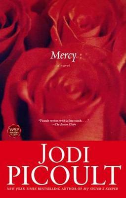

A Spark of Light
$19.00
Formats: Paperback/Epub
Print Length: 392 pages
NZ Publication: March 31st, 2020
ISBN-13: 9781760877453
When Vonita opened the doors of the Center that morning, she had no
idea that it would be for the last time. Wren has missed school to
come to the Center, the sole surviving women's reproductive health
clinic in the state, chaperoned by her aunt, Bex. Olive told Peg she
was just coming for a check-up. Janine is undercover, a pro-life
protester disguised as a patient. Joy needs to terminate her
pregnancy. Louie is there to perform a service for these women, not in
spite of his faith, but because of it. When a desperate and distraught
gunman bursts into the Center, opening fire and taking everyone
hostage, Hugh McElroy is the police negotiator called to the scene. He
has no idea that his fifteen-year-old daughter is inside. Told in a
daring and enthralling narrative structure that counts backward
through the hours of the standoff, this is a story that traces its way
back to what brought each of these very different individuals to the
same place on this fateful day. Jodi Picoult - one of the most
fearless writers of our time - tackles a complicated issue in this
gripping and nuanced novel. How do we balance the rights of pregnant
women with the rights of the unborn they carry? What does it mean to
be a good parent? A Spark of Light will inspire debate, conversation
... and, hopefully, understanding.
Buy Me

House Rules
$35.00
Formats: Paperback/Epub
Print Length: 560 pages
NZ Publication: November 9th, 2010
ISBN: 9780743296441
When your son can't look you in the eye...does that mean he's
guilty? Jacob Hunt is a teen with Asperger's syndrome. He's hopeless
at reading social cues or expressing himself well to others, though
he is brilliant in many ways. But he has a special focus on one
subject--forensic analysis. A police scanner in his room clues him
in to crime scenes, and he's always showing up and telling the cops
what to do. And he's usually right.
But when Jacob's small hometown is rocked by a terrible murder, law
enforcement comes to him. Jacob's behaviors are hallmark Asperger's,
but they look a lot like guilt to the local police. Suddenly the
Hunt family, who only want to fit in, are directly in the spotlight.
For Jacob's mother, Emma, it's a brutal reminder of the intolerance
and misunderstanding that always threaten her family. For his
brother, Theo, it's another indication why nothing is normal because
of Jacob.
And over this small family, the soul-searing question looms: Did
Jacob commit murder?
Buy Me

Leaving Time
$23.00
Formats: Paperback
Print Length: 512 pages
NZ Publication: March 23rd, 2016
ISBN: 9781760291389
Alice Metcalf was a devoted mother, loving wife and accomplished
scientist who studied grief among elephants. Yet it's been a decade
since she disappeared under mysterious circumstances, leaving behind
her small daughter, husband, and the animals to which she devoted her
life. All signs point to abandonment - or worse. Still Jenna - now
thirteen years old and truly orphaned by a father maddened by grief -
steadfastly refuses to believe in her mother's desertion. So she
decides to approach the two people who might still be able to help her
find Alice: a disgraced psychic named Serenity Jones, and Virgil
Stanhope, the cynical detective who first investigated her mother's
disappearance and the strange, possibly linked death of one of her
mother's coworkers. Together these three lonely souls will discover
truths destined to forever change their lives. Deeply moving and
suspenseful, this Jodi Picoult novel is a radiant exploration of the
enduring love between mothers and daughters.
Buy Me

Lone Wolf
$22.00
Formats: Paperback/Epub
Print Length: 432 pages
NZ Publication: October 1st, 2019
ISBN: 9781760877095
Another tour de force from Jodi Picoult, Lone Wolf examines the wild
and lonely terrain upon which love battles reason. Edward Warren,
twenty-four, has been living in Thailand for five years; a prodigal
son who left his family after an irreparable fight with his father,
Luke. Then he gets a frantic phone call: his dad lies comatose,
gravely injured in the same accident that has also injured his younger
sister, Cara. With her father's chances for recovery dwindling, Cara
wants to wait for a miracle. But Edward wants to terminate life
support and donate his father's organs. Is he motivated by altruism,
or revenge? And to what lengths will his sister go to stop him from
making an irrevocable decision? Lone Wolf explores the notion of
family, and the love, protection and strength it's meant to offer. But
what if the hope that should sustain it, is the very thing that pulls
it apart? 'Haunting and powerful ... takes you to another place.'
Canberra Times
Buy Me

Mercy
$29.00
Formats: Epub
Print Length: 504 pages
NZ Publication: August 27th, 2014
ISBN: 9781760111847
What would you do for someone you love? Would you lie? Would you
leave? Would you kill? Jodi Picoult confronts these powerful issues in
Mercy, which follows the path of two cousins driven to extremes by the
power of love. Police chief of a small Massachusetts town, Cameron
McDonald makes the toughest arrest of his life when his own cousin
Jamie comes to him and confesses outright that he has killed his
terminally ill wife out of mercy. A heated murder trial plunges the
town into upheaval and drives a wedge into a contented marriage:
Cameron, aiding the prosecution in their case against Jamie, finds
himself suddenly at odds with his devoted wife, Allie. She is seduced
by the idea of a man so in love with his wife that he'd grant all her
wishes, even her wish to end her life. And when an inexplicable
attraction leads to a shocking betrayal, Allie faces the hardest
questions of the heart: when does love cross the line of moral
obligation? And what does it mean to truly love another? Tightly woven
with passion and a fast-paced plot, Mercy explores some of today's
most highly charged emotional and ethical issues as it draws toward
its stunning conclusion.
Buy Me

My Sister's Keeper
$20.00
Formats: Paperback/Epub
Print Length: 432 pages
NZ Publication: August 29th, 2018
ISBN: 9780743454537
'Rarely have I read such an eloquent portrayal of the family in
crisis. Every character: real. Every situation: true. Picoult defies
you to put this novel down once you've begun it. I do the same.' -
Elizabeth George Anna is not sick, but she might as well be. By age
thirteen, she has undergone countless surgeries, transfusions and
shots so that her older sister, Kate, can somehow fight the leukemia
that has plagued her since childhood. Anna was conceived as a bone
marrow match for Kate, a life and a role that she has never questioned
until now. Like most teenagers, Anna is beginning to question who she
truly is. But unlike most teenagers, she has always been defined in
terms of her sister - and so Anna makes a decision that for most would
be unthinkable, a decision that will tear her family apart and have
perhaps fatal consequences for the sister she loves. Told from
multiple points of view, My Sister's Keeper examines what it means to
be a good parent, a good sister, a good person. Is it morally correct
to do whatever it takes to save a child's life, even if that means
infringing upon the rights of another? Should you follow your own
heart, or let others lead you? What happens when emotion catches up to
scientific advances? Jodi Picoult is the author of more than twenty
bestselling and widely acclaimed novels. Read more about her on her
website www.jodipicoult.com.au.
Buy Me

Plain Truth
$29.00
Formats: Epub
Print Length: 512 pages
NZ Publication: February 26th, 2014
ISBN: 9781743318942
Moving seamlessly from psychological drama to courtroom suspense,
Plain Truth is a triumph of contemporary storytelling. Jodi Picoult
presents a fascinating portrait of Amish life rarely witnessed by
those outside the faith - and discovers a place where circumstances
are not always what they seem, where love meets falsehood, and where
relationships grow strong enough to transcend death. When Ellie
Hathaway decides to defend an unmarried Amish woman against the charge
of the murder of her own child, the urban-savvy defence attorney finds
herself caught in a clash of cultures with a people whose channels of
justice are markedly different from her own. Plain Truth is the
extraordinary story of two unforgettable women - and what happens when
their disparate worlds collide.
Buy Me

Salem Falls
$29.00
Formats: Paperback/Epub
Print Length: 544 pages
NZ Publication: August 27th, 2014
ISBN: 9781760111595
In Salem Falls Jodi Picoult again weaves a compelling story with
accomplished skill and a firm understanding of the complexity of human
relationships. Wrongfully convicted and imprisoned for sexual assault
on one of his students, Jack St Bride arrives in Salem Falls
determined to rebuild his life. He takes a job washing dishes at Addie
Peabody's diner and slowly starts to form a relationship with her in
the quiet New England village...but the rest of the inhabitants remain
suspicious of the stranger. Just when Jack thinks he has outrun his
past, a quartet of teenage girls with a secret turn his world
upside-down once again, triggering a modern-day witch hunt in a town
haunted by its own history.
Buy Me

Songs of the Humpback Whale
$31.00
Formats: Paperback
Print Length: 448 pages
NZ Publication: September 12th, 2013
ISBN: 9781760112677
The beautiful debut novel by international bestselling author Jodi
Picoult. The first time Jane Jones tried to leave her husband, her
daughter almost got killed. This time, she's going to do it right.
Taking Rebecca with her, Jane seeks the only place of safety she
knows. But Rebecca isn't a little girl any longer, and there are some
things Jane cannot save her from, however far she runs . . . THE BOOK
OF TWO WAYS, Jodi's stunning new novel about life, death and missed
opportunities is available to pre-order now.
Buy Me

The Book of Two Ways
$32.00
Formats: Paperback/Epub
Print Length: 432 pages
NZ Publication: September 23rd, 2020
ISBN: 9781760528768
Dawn Edelstein knows everything there is to know about dying. She
specialises in helping her clients make peace with the end of their
lives. But as she's flying home from her latest case, she is forced to
confront her own mortality for the first time. Instead of seeing her
brilliant quantum physicist husband and their beloved daughter flash
before her eyes in what she assumes are her last moments, only one
face is shockingly clear: Wyatt Armstrong. Safely on the ground, Dawn
now faces a desperate decision. Should she return to Boston, her
family and the life she knows, or journey back to an Egyptian
archaeological site she left over a decade earlier, reconnect with
Wyatt, and finally finish her abandoned magnum opus, The Book of Two
Ways? As the story unfolds, Dawn must confront the questions she's
never truly answered: What does a life well-lived look like? When we
depart this earth, what do we leave behind of ourselves? And who would
you be if you hadn't turned out to be the person you are right now?
Buy Me

The Storyteller
$17.00
Formats: Paperback/Epub
Print Length: 472 pages
NZ Publication: August 29th, 2018
ISBN: 9781743318690
Sage Singer is a young woman who has been damaged by her past. Her
solitary night work as a baker allows her to hide from the world and
focus her creative energies on the beautiful bread she bakes. Yet she
finds herself striking up an unlikely friendship. Josef Weber is a
quiet, grandfatherly man, well respected in the community; everyone's
favourite retired teacher and Little League coach. One day he asks
Sage for a favour: to kill him. Shocked, Sage refuses. Then Josef
tells her that he deserves to die - and why. What do you do when evil
lives next door? Can someone who's committed horrendous acts ever
truly redeem themselves? Is forgiveness yours to offer if you aren't
the person who was wronged? And most of all - if Sage even considers
his request - would it be murder, or justice?
Buy Me

Wish You Were Here
$29.00
Formats: Epub
Print Length: 336 pages
NZ Publication: November 25th, 2021
ISBN: 9781743318690
In the breathtaking beauty of the Galapagos Islands, Diana will
learn who she really is, and the person she wants to become, in
Jodi's deeply moving novel about the resilience of the human spirit.
Diana O'Toole is perfectly on track. She will be married by thirty,
done having kids by thirty-five, and move out to the New York City
suburbs, all while climbing the professional ladder in the cutthroat
art auction world. She's a junior appraiser at Sotheby's now, but
her boss has hinted at a promotion if she can close a deal with a
high-profile client. She's not engaged just yet, but she knows her
boyfriend Finn, a surgical resident, is about to propose – days
before her thirtieth birthday. Right on time.
A near-death experience brings Diana abruptly back to familiar city
surroundings, where she tries to pick up the threads of her old
life. Has she changed or have the people around her? Diana is no
longer prepared to be just a follower, at work or in her
relationships. She breaks down years of a stunted relationship with
her mother, takes the initiative in her career, and looks at Finn
through new eyes.
Jodi Picoult's matchless ability to portray the full gamut of human
emotions is once again on display, along with her characteristically
meticulous research into today's burning issues.
Buy Me